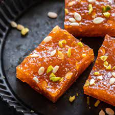

Halwa is a rich and flavorful Indian dessert made from various ingredients like semolina, lentils, or carrots. It's cooked with ghee, sugar, and aromatic spices, making it a perfect treat for celebrations and special occasions.
Ingredients
- 1 cup Semolina (Rava)
- 1/2 cup Ghee (Clarified Butter)
- 1/2 cup Sugar
- 2 cups Water or Milk
- 1/4 cup Chopped Nuts (cashews, almonds)
- 1/4 cup Raisins
- 1/2 tsp Cardamom Powder
- 1 tbsp Raisins (for garnish)
Step-by-Step Instructions
- Heat ghee in a pan over medium heat. Add semolina and roast until it turns golden brown and aromatic.
- Add water or milk gradually, stirring continuously to avoid lumps. Cook until the mixture thickens and the semolina absorbs the liquid.
- Add sugar, cardamom powder, and mix well. Cook for a few more minutes until the sugar dissolves and the mixture attains a pudding-like consistency.
- In a separate pan, lightly toast the nuts and raisins in ghee, then add them to the halwa.
- Remove from heat and let it cool slightly before serving. Garnish with additional nuts and raisins if desired.